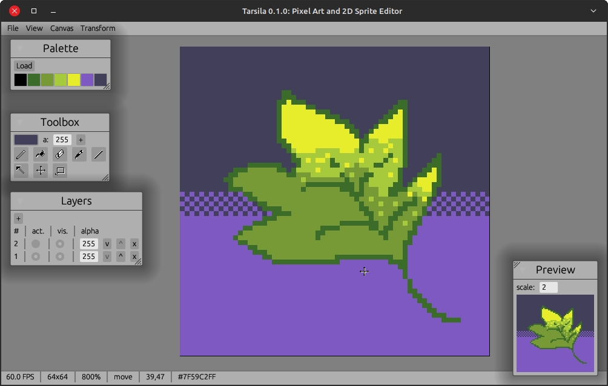
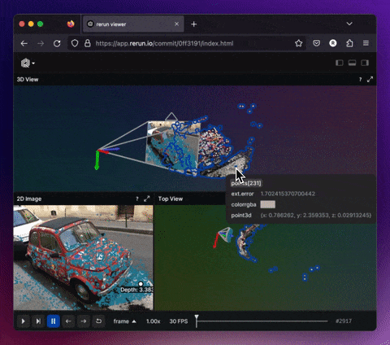

This Month in Rust GameDev #44 - March 2023
Welcome to the 44th issue of the Rust GameDev Workgroup's monthly newsletter. Rust is a systems language pursuing the trifecta: safety, concurrency, and speed. These goals are well-aligned with game development. We hope to build an inviting ecosystem for anyone wishing to use Rust in their development process! Want to get involved? Join the Rust GameDev working group!
You can follow the newsletter creation process by watching the coordination issues. Want something mentioned in the next newsletter? Send us a pull request. Feel free to send PRs about your own projects!
- Announcements
- Game Updates
- Engine Updates
- Learning Material Updates
- Tooling Updates
- Library Updates
- Other News
- Discussions
- Requests for Contribution
Announcements
Rust GameDev Meetup

The 25th Rust Gamedev Meetup took place in March. You can watch the recording of the meetup here on Youtube. Here was the schedule from the meetup:
- Blue Engine - @aryanpur_elham
- Blade - @kvark
- 8bit Duels - @ThousandthStar
- Veloren - @velorenproject
- Graphite - @GraphiteEditor
The meetups take place on the second Saturday of every month via the Rust Gamedev Discord server and are also streamed on Twitch.
Game Updates
8bit Duels
 An 8bit Duels match
An 8bit Duels match
@ThousandthStar is creating a simple multiplayer turn-based strategy using the Bevy Engine. The latest devlog brings features like ownership indicators, movement and attack animations, and a chat system.
The game is under development. The 8-bit Discord is the best place to talk about the game.
8bit Duels will be getting UI updates next, and the first version should release soon after that. Other troops are coming as well.
Discussions: 8-bit Discord
CyberGate
 Particles emit from bullet hits and blackholes
Particles emit from bullet hits and blackholes
CyberGate (YouTube, Discord), an ambitious multiplayer project in development by CyberSoul, aims to invite players into a constantly evolving universe. Harnessing the power of procedural generation and artificial intelligence, this work-in-progress aspires to provide an engaging experience that emphasizes exploration and discovery across its diverse worlds.
The latest updates to CyberGate include:
- Skybox Animation and Transitions
- Dynamic Point Lights
- Particle System
- Post-processing Screen Shake for Hit Feedback
- Hit Particle Effects
- Blackhole
They released the 7th major update in March, They are now working on universe generation alghoritms for the 8th. Participate by joining the Discord server.
ZOMBIE DEMO GAME

ZOMBIE DEMO GAME is a small third-person zombie shooter by @LPGhatguy and @evaera that was released this month.
It features an astonishing 10 minutes of gameplay, a built-in level editor, and zombies! It was produced in order to practice shipping a game and uses a custom engine using wgpu, hecs, and lots of other great crates from the ecosystem.
ZOMBIE DEMO GAME is available for Windows and Linux on itch.io today.
Discussion: Twitter
Shifting Chamber

Shifting Chamber (itch.io, Github) is a simple tactics game where the player, instead of moving the character, manipulates the map around it. The goal is to defeat the enemies by forcing them into hazardous positions - since they cannot be attacked directly.
The game is in an early prototype / proof of concept phase. It is written with the help of the Bevy engine. There is currently only a WASM build (freely available on the itch.io)
Jumpy
Live Map Editing!
Jumpy (GitHub, Discord, Twitter) by Spicy Lobster is a pixel-style, tactical 2D shooter with a fishy theme.
In the last month, the first MVP release of Jumpy was made. The release adds some major new features including a live map editor, critters, extended player animations, and basic AI. Soon afterward an update was made with revised maps and some important bug fixes.
Along with the release is a new blog post, sharing thoughts on some of the lessons learned during development: Jumpy v0.6 Retrospective.
The efforts are now focused on getting network play implemented, with a two player LAN proof-of-concept already working. The hope is to get the remaining network issues fixed and the online matchmaker connected before making another release as soon as it's ready.
Tunnet
 Example of a puzzle in Tunnet
Example of a puzzle in Tunnet
Tunnet (Steam, Itch.io) by @puzzled_squid is a short puzzle/exploration game where you build a computer network in an underground complex.
This project is still WIP and the first devlog has been posted this month. The post describes the main gameplay loop as well as some of the new environments recently added.
The game is developed using Bevy and is expected to be released late 2023.
Digital Extinction
 Building Placement in Digital Extinction
Building Placement in Digital Extinction
Digital Extinction (GitHub, Discord, Reddit) by @Indy2222 is a 3D real-time strategy game made with Bevy.
The most notable updates are:
- simple unit manufacturing was added,
- game minimap was added,
- game end detection was implemented,
- shadows were enabled,
- the health of all units & buildings was decreased,
- the “Quit Game” button in the game menu leads to the main menu instead of the termination of the application,
- close button was added to all menu screens,
- maximum number of players was made configurable by each map,
- screen edge size for camera movement was decreased,
- malformed configuration does not lead to a crash but a toast with an error message is displayed.
- Bevy was upgraded to v0.10.
See gameplay screen recordings on YouTube.
More detailed monthly updates are available here (March) and here (April).
Way of Rhea

Way of Rhea is a puzzle game with hard puzzles and forgiving mechanics being produced by @masonremaley in a custom Rust engine. You can support development by checking out the free demo and wishlisting on Steam!
Recent updates:
- Undo/redo is better tutorialized.
- Existing onboarding hints were improved both functionally and visually.
- New onboarding hints were added to ensure new players understand that teleporters are interactive.
- Various performance improvements were made.
- End-game puzzles were completed.
- Work has begun on laying out the end-game art.
- A release plan has been drafted.
- Way of Rhea was shown at PAX West.
- Way of Rhea will be part of the upcoming Steam Puzzle Fest!
Boat Journey
 Carry your passengers safely to the ocean in Boat Journey.
Carry your passengers safely to the ocean in Boat Journey.
Boat Journey (Github) is a turn-based game where you drive a boat through a procedurally-generated landscape on a voyage along a river destined for the ocean. Accept passengers to have them help you on your journey. Fight monsters, collect junk, trade the junk for fuel, use the fuel to travel to the ocean.
Features:
- Large procedurally-generated world
- Turn the boat at 45-degree increments
- Text-only graphics. You can play it in a terminal if you like!
- Hand-drawn ansi-art character portraits
- You can take on a ghost as a passenger and then become a ghost yourself.
Boat Journey was made for the 7 Day Roguelike 2023 game jam. The devlog is here.
Screen Ball

Screen Ball (GitHub, YouTube) by @lewiszlw is a game that lets you play ball on screen for a rest when you're tired from work. Inspired by the video published by Bevy community member PaulH#7052.
Battle City

Battle City (GitHub, YouTube) by @lewiszlw is a Bevy clone of the classical Battle City game - which brought a lot of happiness to the author's childhood.
You can play it here.
BattleBots Simulator
Lightweight "annoyance" robot variant
BattleBots Simulator (Twitter) by @nilaysavant is a "BattleBots" themed robot wars simulator developed using Bevy.
The game is planned to have multiple combat arenas. Each player can compete using their selected robot. Players will be able to score and win by damaging and destroying opponent robots. Or by knocking opponents out of the arena.
There are 3 variants of the robots planned as follows:
- Light Weight "Annoyance": Low mass/HP, but will be unpredictable and fast. It will slowly kill by consistently annoying and damaging opponents.
- Medium Weight "Sniper": Medium weight robot that will be equipped with a high boost. This will allow it to knockout opponents or push them out of the arena.
- Heavy Weight "TANK": Highest mass/HP and momentum. Slow moving but hard to kill. Equipped with magnetic wedges that will help pin/push opponents out of the arena.
The game is currently a work in progress. For updates follow Nilay Savant on Twitter.
Discussions: Twitter
Cargo Space
Cargo Space (Discord) by @johanhelsing is a co-op 2d space game where you build a ship and fly it through space looking for new parts, fighting pirates and the environment.
This month's development was all about lobbies, chat and integrating with Steam. This spawned a couple of new micro-crates.
bevy_crossbeam_event lets you spawn Bevy events by sending to a crossbeam channel, which is convenient with callbacks that require move semantics, such as those in bevy-steamworks.
steam_dev_launcher is a cross-platform binary crate all
about dev-friendly ways to launch your game through Steam. That is: without
losing logs, panic traces, and optionally using a custom binary or setting extra
environment variables (launch from /target/debug/your_game).
Read more about all this in this month's devlog entry.
Open Combat
Game now includes a HUD
Open Combat (Website, GitHub, Discord) is a real-time tactical game which takes place during the 2nd World War.
Some major changes this month :
- Add basic HUD logic for troops and game management
- Add high definition assets management for zoom display
High-definition infantry sprites integration if planned for next month and we are searching for graphic designer help.
Veloren
Campfire by the lights
Veloren is an open world, open-source voxel RPG inspired by Dwarf Fortress and Cube World.
In March, culling of underground terrain was added, improving rendering speeds. There has been a large influx of player growth, which has been rallying the focus on server optimizations. Optimizations for buffs and auras were added, specifically around how much network bandwidth is being used. A visual guide of Veloren was created, which should help onboard new players to the game. It covers items such as basic controls, what to do when you start the game, basic crafting, and much more. More work has gone into the real-time simulation system improvements. It includes behaviour of where birds should fly to, and how species repopulation works.
March's full weekly devlogs: "This Week In Veloren...": #207.
Maginet
Maginet by Evrim is a fast-paced turn-based strategy game with local/versus-ai/online play on PC/mobile where two guilds of mages battle each other.
This month's updates include:
Tiny Glade

Tiny Glade (Twitter, Youtube) is a small relaxing game about doodling castles. This month's updates include:
- New shapes, including dedicated circle and rectangle shapes.
- Alignment and snapping helpers for the freeform walls.
- Improved robustness of "wall mess" handling algorithm.
Read more in their latest Steam blogpost.
Anastasia also posted a cool thread about their approach to marketing and promotion of the project.
Infinilands
Infinilands by @FluffyCreature is a WIP pixel art sandbox survival game:
Infinilands is a pixel art sandbox survival game that lets you explore and modify a procedurally generated world full of unique plants, creatures and ruins. You can build houses and fight monsters with your friends in online/split-screen co-op. This game also supports dedicated server.
This month's updates include:
- Water logic.
- Auto-tiling for both normal and block placement modes.
Engine Updates
hotline
hotline live coding client
hotline (Blog, Twitter) is a modern, high-performance, hot-reload graphics engine written in Rust. It aims to provide low-level access to modern graphics API features, while at the same time providing high-level ergonomic optimizations.
It uses Bevy's ECS so the focus can remain primarily on the graphics architecture. Direct3D12 is the only supported platform, but the graphics API is abstracted to account for future ports to Vulkan and Metal. The project is in its early stages but already has a decent amount of features showcasing different render strategies, async command buffer generation, plugin based architecture, and hot-reload support for Rust code, HLSL shaders, and render configs. It supports ImGui with docking and multiple windows, video decoding, complex image loading (cubemaps, arrays, volumes), and more.
@polymonster has been live streaming development on Twitch with archives available on YouTube. Recently they have been designing a bindless material system.
Bevy v0.10

Bevy is a refreshingly simple data-driven game engine built in Rust. It is free and open-source forever!
Bevy 0.10 brought many incredible new features. You can check out the full release blog post here, but here are some highlights:
- ECS Schedule v3
- Cascaded Shadow Maps
- Environment Map Lighting
- Depth and Normal Prepass
- Smooth Skeletal Animation Transitions
- Improved Android Support
- Revamped Bloom
- Distance and Atmospheric Fog
- StandardMaterial Blend Modes
- More Tonemapping Choices
- Color Grading
- Parallel Pipelined Rendering
- Windows as Entities
- Renderer Optimizations
- ECS Optimizations
Discussions: /r/rust, Hacker News, Twitter
Fyrox
Fyrox (GitHub, Discord, Twitter) is a game engine that aims to be easy to use and provide a large set of out-of-the-box features. This month's highlights include:
- Basic Android support for GLES3.0+ devices - usable but the renderer lacks mobile-specific optimizations.
- Lightmapper fixes.
- Blend shapes allows to dynamically change 3D meshes (useful for facial animation, etc).
- Fyrox now uses tinyaudio as its sound output backend.
Discussions: /r/rust_gamedev
Learning Material Updates
Developing an editor with egui

@TheGrimsey published a three-part series of articles about developing a Spell Editor with egui.
- "Databases & Editors (1/3)" covers displaying egui windows & tables of entries.
- "Editors (2/3): Editing entries" elaborates on handling editing of entries & properties such as enums.
- Finally, "Editors (3/3): Selection dialog & new entries" talks about developing a selection dialog and creating new entries.
Writing NES assembly programs in a Rust DSL
 Video: Talk about writing NES assembly programs in Rust
Video: Talk about writing NES assembly programs in Rust
This is a talk about writing a program for the Nintendo Entertainment System that exposes all of its audio processor registers through an interface that lets the user flip bits using the controller and hear the result in real-time. The program is written in Rust using an Embedded Domain-Specific Language. The talk demonstrates the features of the language and how they can be used to help express NES assembly programs in Rust.
Some features of the EDSL:
- defining and calling assembly functions by string labels
- using Rust as a powerful macro language (e.g. generate code inside a for-loop)
- using Rust's type system to catch invalid combinations of instruction and addressing mode
The source code for the NES program described in the talk is here and there is a demo of the tool on youtube. The PDF of the slides from the talk are here.
Using the Depth Prepass in Bevy 0.10
 depth prepass powered intersections between a shield and wall/floor
depth prepass powered intersections between a shield and wall/floor
@chrisbiscardi published a video about using the Depth Prepass texture in Bevy 0.10. The depth prepass, along with the normal prepass, are new passes in Bevy 0.10 that allow you to access distance from the camera and normal direction for a particular pixel on the screen. The textures created by these passes can then be used to power effects in your own custom shaders.
Discussions: YouTube, Mastodon
Applying 5 million pixel updates per second with Rust & wgpu
@codetheweb published an article that explores the basics of wgpu by optimizing a program that replays /r/place. By the end, CPU usage is around 18-25% while applying an average of 5m pixel updates per second at 10,000x playback speed.
Discussions: /r/rust, /r/rust_gamedev
NPCs and Dialog in Bevy
Matthew Bryant released a video focused on the design and implementation of a dialog system for NPCs in his RPG game. This is the 4th in a weekly series about the high level ECS design of a full game using Bevy.
Tooling Updates
Tiger

Tiger (Github, itch.io by @agersant is a visual tool to author game spritesheets and their metadata.
Version 1.0 launched this month, which means Tiger is ready for production. It currently has the following features:
- Easy-to-use timeline to author animation.
- Supports perspectives for any 2D game (top-down, sidescroller, isometric, etc.).
- Automatically hot-reloads source images when they are changed.
- Packs animation frames into texture atlases.
- Can add and tag hitboxes.
- Flexible template system exports metadata in any text-based format.
- Free and open-source with a permissive license.
Tarsila
 Editor's UI
Tarsila is a pixel art and spritesheet editor written in Rust using egui and macroquad, inspired by Aseprite. The first public release (0.1.0) has been published on March 18th, with basic features.
Since the publication not many new features have been added, mostly bugfixes and an overhaul of the input system, in preparation for configurable shortcuts (via a text file and later GUI).
In the roadmap for 0.2.0 are things like color effects (change hue, saturation, etc.), ovals and circles, and more.
We welcome contributions! Big thanks to contributors @quiet-bear and @crumblingstatue.
Rerun

Rerun (Discord, Github, Website) is an open-source SDK for logging complex visual data paired with a visualizer for exploring that data over time. While its primary focus is on robotics and computer vision, it can be useful for all kinds of rapid prototyping & algorithm development.
Three new versions got released since the last newsletter! 0.5.0 is now latest. A few of the biggest highlights:
- The web-viewer is, while still experimental & unpolished, now stable. Try it out here!
- Rerun can now be embedded in Jupyter notebooks
- Depth textures can now directly be visualized with point clouds and have a variety of color map settings.
- Selection/hover highlights use now outlines for better visibility and in order to avoid changing the visualization itself.
- Picking is now done on the GPU, fixing many issues of the previous system
- All color-mapping is now done on-the-fly on the GPU, faster & less memory use
- Support for mesh vertex colors.
- New example of forever-streaming a web-camera image to Rerun.
- Major improvements to the data store for better performance and memory usage
There's a growing community on Discord waiting for you to join in case you have any questions, comments or just want to follow the latest development. The Github project is MIT/Apache licensed and open to contribute for everyone, be it with suggestions, bugs or PRs.
Graphite
Valley of Spires - Vector art made in Graphite
Graphite (website, GitHub, Discord, Twitter) is a free, in-development raster and vector 2D graphics editor based around a Rust-powered node graph compositing engine.
March's sprint 24 brings forth:
- Vector nodes: A major refactor moves vector shape layers into the node graph. Now the shape, transform, fill, and stroke are all set via nodes in the graph. Text is the final remaining holdout and will be node-ified next, letting the node graph act as the universal layer type.
As always, new contributors are kindly invited to get involved and take on approachable issues with help from the project's friendly and supportive developer community on Discord.
Open Graphite in your browser and start creating! Share your designs with #MadeWithGraphite on Twitter.
ruffle
Demo of the new text input boxes on a mobile device
Ruffle is an open-source Flash Player emulator, written in Rust. It aims to run natively on all modern operating systems and web browsers, leveraging Rust's memory safety guarantees to avoid the security pitfalls that Flash became notorious for in its later years.
This month's updates include:
- Significant improvements to AVM1 engine accuracy fix dozens upon dozens of ActionScript 2 games.
- Work on the AVM2 (ActionScript 3) backend is also speeding up, a bunch of AS3 games are now playable.
- Better mobile devices support: text input boxes and iOS a context menu.
Check out the blog post for more details.
Orlop

Orlop by Tim Rach is a media management tool for anyone who works with a large asset library on a daily basis.
Organise and browse your asset collection with built-in tagging, search and preview functionality. Automatic tagging requires no effort - just import your asset folder and go!
The beta version is available on itch.io or through Testflight.
Foxtrot
Jan Hohenheim's (@janhohenheim) Foxtrot, the all-in-one for the Bevy engine, has reached its 0.2 milestone. Thanks to feedback, contributions and crates from the community, it has now reached a fairly stable state. While there used to be a major change every week before, the project will limit itself to updating only minor things during a Bevy version lifecycle and do major reworks only in time for new versions.
So, if anyone was eyeing it but was turned off by the frequent big changes or the lack of some features, now is the time! Version 0.2.0 includes the following cool new features compared to 0.1.0:
- Wasm support, with a live demo here. If the mouse lock doesn't work, spam "Esc" a bunch of times üòâ
- Beautiful grass through warbler_grass
- Buttery smooth cameras through bevy_dolly
- Dynamic pathfinding through oxidized_navigation
- Simplified error handling through bevy_mod_sysfail
- Easy to write plugins through seldom_fn_plugin
- Sprinting particles through bevy_hanabi
- A demo scene with houses (CC0 if you want to reuse them)
- A dialog that gets draws letter-by-letter and is nicer to look at
- Better documentation
Thanks also to bevy_game_template, without which Foxtrot would not be possible in the first place! And thanks to PhaestusFox, who made a video about the template
Library Updates
bevy_text_mode

bevy_text_mode (GitHub) by yopox is a Bevy plugin that makes it possible to set the background and the foreground color of a texture atlas sprite (built-in Bevy sprites only have a tint property). This plugin is convenient when using 1-bit tilesets such as MRMOTEXT.
The 0.1 release adds a TextModeTextureAtlasSprite component with
configurable background, foreground, x/y flip and opacity.
Discussion: Mastodon
Matchbox

Matchbox is a library for easily establishing unreliable, unordered, peer-to-peer WebRTC data connections using rust WASM (and native). This enables cross-platform low-latency multiplayer games.
Previously, the socket opened a single udp-like data channel. In version 0.6, however, support for adding extra channels with configurable ordering and package retransmits was added. This enables direct p2p tcp-like connections as well.
Two new crates were added in this release. matchbox_signaling, lets you set up a custom signaling server, also supporting client-server topologies, enabling scenarios where one player acts as the host for the other players.
bevy_matchbox provides ergonomic usage with Bevy. Severely cutting down on the boiler-plate needed.
The tutorial series on how to make a p2p web game with Bevy, GGRS and Matchbox was also updated to the latest versions of all three libraries.
Read more about all the new features in the 0.6 release post.
Discussions: /r/rust, /r/rust_gamedev, /r/bevy, Mastodon
Bevy Rust-GPU
 Hot-rebuilding a rust-gpu shader from a bevy app
Hot-rebuilding a rust-gpu shader from a bevy app
Bevy Rust-GPU by @Shfty is a suite of crates encoding a practical rust-gpu workflow for bevy.
The latest release brings new GPU interop traits, shader macro robustness, and compatibility with bevy 0.10 and rust-gpu 0.6. Further development continues apace, with major improvements to the SPIR-V interchange pipeline, shader compilation machinery, and support code already merged.
The project is still in development, and presently relies on custom forks of the associated crates. However, various PRs have been filed upstream to build out a robust interchange between them, with the hope of mainline compatibility - and a corresponding crates.io release - sometime in the future.
In particular, @eddyb deserves special thanks for his work on the rust-gpu side, which has enabled and informed many of the improvements tabled for the next release, and greatly accelerated the process of making Rust a viable shading language for users of Bevy and WGPU.
Discussion: /r/bevy
rust-gpu-sdf
 An implicit surface defined compositionally, raymarched, and shaded entirely
in Rust
An implicit surface defined compositionally, raymarched, and shaded entirely
in Rust
Announcing rust-gpu-sdf, by @Shfty; a no-std signed distance field library designed for use on both CPU and GPU.
Signed distance fields are a powerful computational tool that allows a surface to be represented by a function from position to distance. This has intuitive applications in various domains such as rendering, collision, meshing, and volume modeling, providing the means to represent analytically smooth geometry, dynamic morphing (as pictured), and various other effects that would traditionally require specialized tools to model.
rust-gpu-sdf aims to enumerate this domain to the fullest extent allowed by Rust's type system, lifting its traditionally monolithic implementation style into a set of intuitive composable operators, and leveraging a natural synergy with functional programming to provide powerful compositional tools.
Contrary to its working title, rust-gpu-sdf is actually rust-gpu-agnostic, so can be used anywhere Rust can; it's presently named as such due to being built as the primary consumer of bevy-rust-gpu, with a view to providing a performant and compositional way to compile SDFs into SPIR-V for rendering on the GPU.
It's presently in a heavy-development prerelease state, so watch this space!
Pixelate Mesh
Jan Hohenheim (@janhohenheim) recently published a new crate called pixelate_mesh. It is a Bevy plugin that provides a Pixelate component that one can add to any entity holding a mesh or a scene, which it will then pixelate without any post-processing. The idea is to recreate the effect seen in Prodeus.
Other News
- Other game updates:
- Combine&Conquer v0.5 brings multi cursor support, the ability to turn structures on/off, and a view that shows your factory’s production stats.
- bevy-rust-wasm-experiments is a small video game with Bevy that compiles both to desktop and WASM and showcases how you can get input from your smartphone's accelerometer.
- vustnexus is a side-scroller about surviving and defeating the infect of the Vust Swarm!
- The Beat Of Space is a space-themed rhythm game built with macroquad.
- Pirate Annihilation posted the second YouTube devlog about the switch from 2D to 3D, hexagonal map, and new camera.
- Other learning material updates:
- PhaestusFox posted more YouTube videos about Bevy.
- s0lly shared a video on creating transparent windows using Bevy.
- An article about creating a Snake game for the browser with WASM and Rust.
- @whoisryosuke released a tutorial on getting started with egui in Rust.
- Other engine updates:
- Tetra v0.8 brings a bunch of small API improvements and bugfixes. The engine is still in maintainence-only mode though.
- Other tooling updates:
- @Setzer22 shared a demo of how smooth subdivision works in the Blackjack editor.
- Epic Asset Manager is an unofficial client to install Unreal Engine, download and manage purchased assets, projects, plugins and games from the Epic Games Store.
- Asahi Linux (Linux distro for Apple Silicon Macs) uses Rust in their Vulkan drivers.
- forerunner is a WIP storytelling platform for composing Souls-like Action-RPGs using the cloud infrastructure and Pixar's USD as the core parts.
- Other library updates:
- winit-block-on is an adaptor that allows one to easily block on futures using winit as a reactor.
- tinyaudio is a cross-platform, easy-to-use, low-level audio output library from the creator of the Fyrox engine.
- faer v0.5 brings a new SVD module, which implements the singular value decomposition for real matrices
- Bevy Hanabi v0.6 brings a new property-based architecture for more control at runtime and also an optimized GPU buffer with Attribute-based particle layout.
Discussions
- /r/rust_gamedev:
Requests for Contribution
- 'Are We Game Yet?' wants to know about projects/games/resources that aren't listed yet.
- Graphite is looking for contributors to help build the new node graph and 2D rendering systems.
- winit's "difficulty: easy" issues.
- Backroll-rs, a new networking library.
- Embark's open issues (embark.rs).
- wgpu's "help wanted" issues.
- luminance's "low hanging fruit" issues.
- ggez's "good first issue" issues.
- Veloren's "beginner" issues.
- A/B Street's "good first issue" issues.
- Mun's "good first issue" issues.
- SIMple Mechanic's good first issues.
- Bevy's "good first issue" issues.
- Ambient's "good first issue" issues.
That's all news for today, thanks for reading!
Want something mentioned in the next newsletter? Send us a pull request.
Also, subscribe to @rust_gamedev on Twitter or /r/rust_gamedev subreddit if you want to receive fresh news!
Discuss this post on: /r/rust_gamedev, Mastodon, Twitter, Discord.